정보보안기사 (2013-07-06 기출문제)
1과목: 시스템 보안
1. 다음은 운영체제의 5계층을 계층별로 설명한 내용이다. 하위계층에서 상위계층으로 바르게 나열된것은?
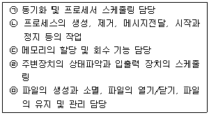
- ㉠-㉢-㉡-㉣-㉤
- ㉠-㉡-㉢-㉣-㉤
- ㉡-㉠-㉢-㉤-㉣
- ㉡-㉠-㉤-㉢-㉣
(정답률: 36%)

2. 사용자가 작성한 프로그램을 운영체제에 실행하도록 제출하면 운영체제는 이를 받아 프로세스를 생성한다. 이 때 생성된 프로세스의 주소 영역(Address Space)을 옳게 열거한 것은?
- 메모리 영역, 데이터 영역, 정적영역
- 텍스트 영역, 스택 영역, 코드 영역
- 코드 영역, 텍스트 영역, 데이터 영역
- 코드 영역, 데이터 영역, 스택 영역
(정답률: 50%)
3. 유닉스계열의 시스템에서 핵심부분인 커널(Kernel)에 대한 설명으로 옳지 않은 것은?
- 유닉스 시스템의 구성은 커널(Kernel), 셀(Shell), 파일시스템(File System)으로 구성되며, 커널은 프로세스 관리, 메모리 관리, 입출력 관리를 수행한다.
- 커널(Kernel)은 데몬(Daemon) 프로세스를 실행하고 관리한다.
- 유닉스계열의 시스템이 부팅될 때 가장 먼저 읽혀지는 핵심 부분으로 보조기억장치에 상주한다.
- 커널(Kernel)은 셀(Shell)과 상호 연관되며 작업을 수행한다.
(정답률: 75%)
4. 유닉스계열의 시스템에서 일반 계정의 비밀번호를 저장할 때 암호화하여 저장한다. 일반적으로 어떤 알고리즘을 이용하여 저장하는가?
- DES
- MD5
- SHA
- RSA
(정답률: 15%)
5. 다음 중에서 유닉스 운영체제에 관한 설명으로 옳지 않은 것은?
- 유닉스 운영체제는 커널, 셀, 파일 시스템으로 구성된다.
- 파일 시스템은 환경에 대한 정보를 담고 있는 /etc 디렉터리가 있고, 장치에 대한 것은 /dev에 있다.
- 셀에는 C shell, Bourne shell, Korn shell 등이 있다.
- OLE(Object Linking Embedded)를 사용한다.
(정답률: 72%)
6. 다음은 어떤 접근제어 정책을 설명하고 있는 것인가?
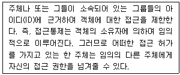
- MAC
- RBAC
- Access Control List
- DAC
(정답률: 70%)
7. 선택한 모든 파일을 백업하지만 백업이 완료된 파일의 Archive bit를 해제하지는 않으며, 스케줄링 백업 일정에 영향을 미치지 않는 백업방식은 어느 것인가?
- 일반 백업
- 증분 백업
- 복사 백업
- 차등 백업
(정답률: 49%)
8. 윈도우에서 관리 목적상 기본적으로 공유되는 폴더 중에서 Null Session Share 취약점을 갖는 것은?
- C$
- G$
- IPC$
- ADMIN$
(정답률: 83%)
9. 다음에서 설명하는 공격용 소프트웨어는 무엇인가?
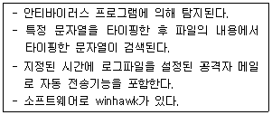
- Root Kit
- Key Logger software
- Port Scanning
- Nessassin
(정답률: 75%)
10. 서버 보안을 강화하기 위한 방법으로 서버에 들어오고 나가는 IP 트래픽을 제어할 수 있는 방법은?
- ipchain/iptable
- IP Control/mod_security
- mod_security/nmap
- IP Manager/IP Filtering
(정답률: 60%)
11. 만약 Setuid 사용을 허락하고 싶은 계정인 ‘user-name’을 임의의 그룹에 추가하고 싶을 때 알맞은 명령어는?(오류 신고가 접수된 문제입니다. 반드시 정답과 해설을 확인하시기 바랍니다.)
- #usermod –F 200 user-name
- #usermod –G 100 user-name
- #usermod –F 100 user-name
- #useradd –G 100 user-name
(정답률: 15%)
12. 윈도우의 NTFS 파일시스템 설명으로 옳지 않은 것은?
- NTFS의 보안설정은 everyone 그룹에 대하여 모든 권한은 '불가'이다.
- net share 폴더에 의해서 공유 폴더를 확인할 수 있다.
- 윈도우 파일시스템에는 FAT16, FAT32, NTFS가 존재하며, NTFS는 윈도우 NT, 윈도우 2000, 윈도우 XP에서 사용된다.
- 윈도우에서는 manager에게 작업을 분담시키고 하드웨어를 제어하는 것은 Object Manager이다.
(정답률: 45%)
13. 유닉스 파일시스템 설명으로 옳지 않은 것은?
- 파일의 권한은 소유자, 그룹, 일반 사용자로 구성되어 있다.
- 파일의 변경 또는 삭제는 소유자만 가능하다.
- 유닉스 파일 시스템은 NFS(Network File System)를 통해서 파일을 공유할 수 있다.
- 파일 시스템은 계층 형으로 구성되어 있다.
(정답률: 42%)
14. 파일시스템에서 가용공간(Free Space)을 관리하기 위해 사용하는 방법이 존재한다. 다음은 가용 공간 리스트를 유지하는 방법 중에서 무엇을 설명한 것인가?
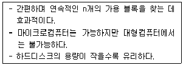
- 비트벡터(Bit Vector)
- 비트맵(Bitmap)
- 해시테이블(Hash Table)
- 클러스터(Cluster)
(정답률: 32%)
15. 유닉스 시스템의 로그 분석에 사용하는 파일이 담고 있는 내용으로 옳지 않은 것은?
- wtmp : 사용자 시스템 시작과 종료 시간, 로그인과 로그아웃 시간 기록
- sulog : su(switch user) 명령어와 관련된 로그 기록
- utmp : 시스템에 전에 로그인했던 사용자의 정보를 기록
- logging : 로그인 실패에 대한 정보를 기록
(정답률: 49%)
16. 다음 중에서 snort를 이용하여 탐지할 수 없는 공격은 무엇인가?
- 버퍼 오버플로우(Buffer OverFlow)
- 사전 공격(Dictionary Attack)
- TCP SYN Flooding
- IP Filtering
(정답률: 43%)
17. 다음 중에서 스캔 공격 및 탐지 도구에 대한 설명으로 옳지 않은 것은?
- nikto는 6,500개 이상의 잠재적인 위험 파일(CGI)을 포함한 웹서버 스캐너, 인덱스 파일, 서버 문제, 취약점을 파악할 수 있다.
- sscan은 리눅스 포트 스캔 툴이다.
- 시스템에서 실시간 I/O 장비 스캔 탐지도구로는 portsentry, scanlogd, scanded 등이 있다.
- 스캐닝 공격은 특정 보안 취약점만 스캔하는 특정 취약점 스캔 공격, 스캐닝 사실을 숨기기 위한 은닉(Stealth) 스캔 등이 있다.
(정답률: 43%)
18. 다음 중에서 버퍼 오버플로우(Buffer Overflow)에 대한 설명으로 옳지 않은 것은?
- 버퍼에 저장된 프로세스들 간의 자원경쟁을 야기 시켜 권한을 획득하는 기법으로 공격한다.
- 메모리에서 스택영역에 복귀주소를 가진다. 스택 오버플로우(Stack Overflow)는 복귀주소에 악성 모듈을 삽입하여 공격할 수 있다.
- 힙(Heap)영역은 malloc 혹은 new의 동적 함수로 할당된다.
- 버퍼 오버플로우(Buffer Overflow)는 제한된 메모리를 초과한다.
(정답률: 52%)
19. 다음 중에서 시스템의 취약성 점검을 위하여 사용할 수 있는 도구가 아닌 것은?
- ping
- SATAN
- SAINT
- NESSUS
(정답률: 64%)
20. 가상메모리를 지원하는 운영체제에서 성능은 가상주소를 실주소로 변환하는 DAT(Dynamic Address Translation)에 의해 영향을 받는다. DAT 속도가 빠른 순서에서 느린 순서로 열거한 것은?
- 직접사상-직접/연관사상-연관사상
- 직접/연관사상-연관사상-직접사상
- 연관사상-직접사상-직접/연관사상
- 연관사상-직접/연관사상-직접사상
(정답률: 52%)
2과목: 네트워크 보안
21. 다음 중에서 데이터링크 계층에 대한 설명으로 옳지 않은 것은?
- 데이터링크 계층(Datalink Layer)은 에러처리(Error Control)를 수행한다.
- Flag와 패턴이 데이터에 나타날 경우에 대비하여 네트워크 계층에서 이를 처리하기 위한 메커니즘을 가지고 있다.
- MAC(Media Access Control) 주소 제어와 데이터링크 제어를 한다.
- 에러제어 및 흐름제어 역할을 한다.
(정답률: 57%)
22. 다음 중에서 TCP 프로토콜에 대한 설명으로 옳지 않은 것은?
- 신뢰성 있는 연결지향
- 3-Way Handshaking
- 데이터를 세그먼트 단위로 전송
- 모든 세그먼트는 순번을 지정하지만, 데이터 전달을 확인할 필요가 없다.
(정답률: 77%)
23. 다음은 TCP 프로토콜의 타이머에 대한 설명이다. 옳지 않은 것은?
- TCP 타이머에서 재전송 타이머(RTO, Retransmission Time Out)값으로 설정하고 타이머가 끝나기 전에 확인응답이 수신되면 타이머는 소멸한다.
- 왕복시간(RTT, Round Trip Time)은 재전송 초과 값을 계산하기 위해서 왕복시간을 계산한다.
- 영속 타이머는 교착상태가 발생한다.
- RTO 값은 초기 RTT 값을 기준으로 항상 고정되어 있다.
(정답률: 49%)
24. 다음 ( )안에 알맞은 OSI 계층은?
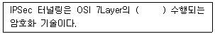
- 1계층
- 2계층
- 3계층
- 4계층
(정답률: 72%)
25. 다음 중에서 IPv6에 관한 설명으로 옳지 않은 것은?
- IP주소 부족 문제를 해결하기 위하여 등장했다.
- 확장된 주소 필드를 사용하여 12개 필드를 사용한다.
- 128비트 체계를 지원한다.
- IPv6에서는 IPSec 기능을 기본 사항으로 제공
(정답률: 61%)
26. 클라이언트는 DNS 질의가 요청되었을 경우 제일 먼저 DNS Cache를 확인하게 되는데, 다음에서 수행된 DNS Cache를 확인하는 명령어는?
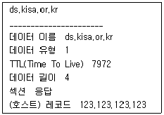
- ipconfig /dnsdisplay
- ipconfig /displaydns
- ipconfig /flushdns
- ipconfig /dnsflush
(정답률: 71%)
27. VLAN(Virtual LAN)에 대한 설명으로 옳지 않은 것은?
- Port기반 VLAN은 어플리케이션 포트를 VLAN에 할당한다.
- 가장 일반적인 방식은 Static VLAN으로 각 포트들을 원하는 VLAN에 하나씩 배정한다.
- Access Port는 하나의 Port에 하나의 VLAN이 속한다.
- Trunk Port는 하나의 포트에 여러 개의 VLAN Frame이 전송될 수 있다.
(정답률: 25%)
28. NIC(Network Interface Card)에 대한 설명으로 옳지 않은 것은?
- 기본적인 기능은 회선에 데이터를 송수신하는 역할을 한다.
- 각 디바이스를 네트워크 회선 연결 시스템으로 연결한다.
- 통신망 구성 요소 중 가장 하위 레벨의 물리적인 접속 기기이다.
- 네트워크에 정보를 전송하기 위해서 병렬구조로 데이터를 바꾼다.
(정답률: 58%)
29. 라우터(Router)를 이용한 네트워크 보안 설정 방법 중에서 내부 네트워크로 유입되는 패킷의 소스 IP나 목적지 포트 등을 체크하여 적용하거나 거부하도록 필터링 과정을 수행하는 것은?
- Ingress Filtering
- Egress Filtering
- Unicast RFP
- Packet Sniffing
(정답률: 65%)
30. 다음은 라우터(Router)를 이용한 네트워크 보안 설정에 대한 내용이다. 옳은 것을 모두 고르면?
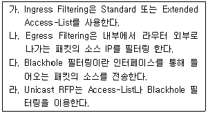
- 가, 나
- 가, 나. 다, 라
- 가, 나, 라
- 나, 다, 라
(정답률: 38%)
31. 한 개의 ICMP(Internet Control Message Protocol) 패킷으로 많은 부하를 일으켜 정상적인 서비스를 방해하는 공격 기법은?
- Ping of Death
- Land Attack
- IP Spoofing
- Hash DDoS
(정답률: 68%)
32. 다음 중에서 원격지 운영체제(OS)를 탐지해 내는 방법으로 옳지 않은 것은?
- telnet, IP port, ftp 등을 이용한다.
- nmap -v –oX 옵션을 이용한다.
- TCP의 초기 시퀀스 넘버를 확인한다.
- HTTP GET과 서버의 포워드를 grep한다.
(정답률: 37%)
33. 다음 중에서 포트 스캔 공격을 했을 때 포트가 열린 경우 돌아오는 응답이 다른 하나는?
- Xmas Scan
- NULL 스캔
- TCP Open
- UDP 스캔
(정답률: 49%)
34. 포트 스캔 공격과 연관성이 없는 것은?
- nmap –sT를 통해서 TCP Scan을 수행할 수 있다.
- 정보수집 단계에서 웹 스캔, 포트 스캔을 통해서 운영체제 버전과 종류를 파악할 수 있다.
- 스텔스 스캔은 로그를 기록하지 않고 포트 스캔을 수행한다.
- UDP Scan은 포트가 열려있을 경우 ICMP Echo Unreachable 패킷을 전송한다.
(정답률: 73%)
35. 다음 보기의 현상이 나타나게 된 공격에 대한 설명으로 옳은 것은?
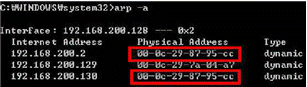
- 공격 성공 후 패킷은 공격자가 설정해 놓은 시스템으로 전송된다.
- ARP Cache Table을 정적으로 설정하기 위해서는 arp –d 옵션을 사용한다.
- 네트워크를 주기적으로 모니터링 한다고 해서 예방할 수 없다.
- ARP Broadcast를 사용하는 공격기법이고 ARP Broadcast시에 인증을 수행한다.
(정답률: 44%)
36. 다음에서 나타내는 망구성도의 특징을 설명한 것으로 옳은 것을 모두 고르시오.
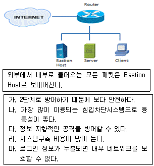
- 가, 나, 다, 라, 마
- 가, 나, 다
- 가, 나, 라
- 나, 다, 마
(정답률: 20%)
37. 방화벽 구축에 관한 그림의 설명으로 옳은 것은?
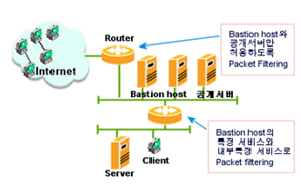
- Dual Homed
- Bastion Host
- Screened Host
- Screened Subnet
(정답률: 28%)
38. 스텔스(Stealth) 모드 침입탐지시스템의 특징을 설명한 것으로 옳은 것은?
- 네트워크 패킷을 분석하고 침입을 탐지한다.
- 침입을 탐지해도 아무런 조치를 하지 않는다.
- IDS 호스트에 네트워크 감시용과 일반용도 2개의 네트워크 인터페이스를 두고 네트워크 감시용 인터페이스는 외부로 어떠한 패킷도 보내지 않는다.
- 일반적으로 침입탐지시스템(IDS)은 탐지할 수 없는 은닉공격 행위도 탐지한다.
(정답률: 39%)
39. 다음 중에서 침입탐지시스템을 도입하기 위한 과정에서 가장 먼저 선정해야 하는 것은?
- 조직에서 보호해야할 자산 산정
- 탐지기능 파악
- 위험 분석을 통한 취약점 분석
- BMT 및 침입탐지시스템 설치
(정답률: 53%)
40. 다음에서 설명하는 공격방식은 무엇인가?
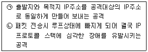
- Land Attack
- Smurf Attack
- Ping of Death Attack
- Teardrop Attack
(정답률: 74%)
3과목: 어플리케이션 보안
41. FTP 프로토콜에서 데이터 전송 모드에 관한 설명으로 옳은 것은?
- FTP는 TCP와 UDP 프로토콜을 함께 사용한다.
- Default는 Active모드이며, Passive모드로의 변경은 FTP 클라이언트가 결정한다.
- Passive모드로의 변경은 FTP 서버가 결정한다.
- FTP 명령과 데이터가 같은 포트를 사용한다.
(정답률: 75%)
42. 다음 중 윈도우 운영체제 상에서 IIS FTP 서버 설정에서 지정할 사항으로 가장 부적절한 것은?
- 가상 디렉터리 설정
- active/passive 모드 지원 여부
- FTP 메시지 지정
- 홈 디렉토리 지정
(정답률: 47%)
43. 유닉스 환경에서 일반 사용자들을 지원하기 위한 FTP 서버를 설치한 후의 일반적 설정 사항에 해당 되지 않은 것은?
- 익명접속 허용 여부
- 접속을 거부할 사용자 ID 리스트
- 포트번호
- 타임아웃 시간
(정답률: 58%)
44. TFTP에 대한 설명으로 옳지 않은 것은?
- UDP 69번 포트를 이용하여 데이터를 전송한다.
- 데이터의 전송속도가 우수하지만, 인증을 하지 않는다.
- FTP 명령어 중 USER, PASS 등 사용자 인증과 관련된 명령은 지원되지 않지만, 원격지 파일목록 보기를 위한 LIST, 데이터수신을 위한 RETR 등의 명령어는 지원된다.
- TFTP는 블라스터 웜으로 악용되어서 호스트를 감염시키는데 활용될 수 있다.
(정답률: 25%)
45. 다음은 인터넷 등록서비스의 일종에 대한 접속방식 연결순서를 개념적으로 설명한 것이다. 이 접속방식의 등록서비스에 대한 설명으로 가장 거리가 먼 것은?
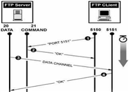
- 데이터 전송을 위해 1024 이후 포트를 사용한다.
- 서버에서 21번 포트와 1024 이후 포트를 사용하여 연결한다.
- Exit는 연결을 종료하기 위한 Command Line 명령어이다.
- 보안을 위해서 서버에서 Passive 모드로 사용한 포트를 제한한다.
(정답률: 50%)
46. 메일 서버 서비스에 대해서 할 수 있는 서버공격 기법은?
- Active Contents
- UDP Bomb
- Syn Flooding
- Mail Bomb
(정답률: 64%)
47. 다음 중 오픈소스 스팸 필터링 도구인 SpamAssassin에서 스팸 분류 방법으로 사용하는 것이 아닌 것은?(오류 신고가 접수된 문제입니다. 반드시 정답과 해설을 확인하시기 바랍니다.)
- 제목·본문 규칙 검사
- 첨부파일 검사
- 베이시언 필터링
- 헤더 검사
(정답률: 29%)
48. 다음은 웹 보안공격 방지에 대한 설명을 나열한 것이다. 어떤 웹 보안 공격을 방지하기 위한 설명인가?
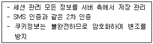
- SQL Injection
- XSS
- 쿠키/세션 위조 공격방지 방법
- 좀비 쿠키 위조 공격방지 방법
(정답률: 71%)
49. 다음에서 설명하고 있는 웹 서비스 공격 유형은 무엇인가?
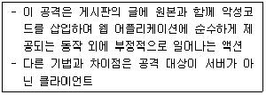
- SQL Injection
- XSS(Cross Site Scripting)
- 업로드 취약점
- CSRF(Cross Site Request Forgery)
(정답률: 61%)
50. 웹과 데이터베이스를 연동한 어플리케이션에서 SQL injection 공격을 방어하기 위한 방지법이 아닌 것은?
- 로그인 창에 특수기호를 넣지 못하도록 한다.
- 인증 시에 2채널 인증을 한다.
- 원시 ODBC 에러를 출력한다.
- 스니핑을 통해서 모니터링을 하고 취약점을 개선한다.
(정답률: 48%)
51. 컴퓨터시스템에 대한 공격 방법 중에서 메모리에 할당된 버퍼의 양을 초과하는 데이터를 입력하여 프로그램의 복귀 주소(return address)를 조작, 궁극적으로 공격자가 원하는 코드를 실행하도록 하는 공격은?
- 버퍼 오버플로우 공격
- Race Condition
- Active Contents
- Memory 경합
(정답률: 71%)
52. 데이터베이스 내의 자료 값들을 잘못된 갱신이나 불법조작으로부터 보호함으로써, 정확성을 유지하고자 하는 것은 아래의 DB보안 요구 사항 중 어느 것인가?
- 데이터 일관성
- 데이터 무결성
- 데이터 보안
- 데이터 접근제어
(정답률: 62%)
53. 오라클 데이터베이스의 보안설정 및 운영으로 옳지 않은 것은?
- 데이터베이스 설치이후 디폴트로 설정된 패스워드는 모두 변경되어야 한다.
- svrmgr 서비스를 제공하는 버전의 경우에는 Connect Internal에 암호가 설정되도록change_password 명령을 사용한다.
- MySQL의 경우 호스트 명령을 실행하는 프로시저는 삭제한다.
- UTL_File에 대한 실행 권한을 제한한다.
(정답률: 31%)
54. VISA와 Master Card사가 신용카드를 기반으로 한 인터넷 상의 전자 결제를 안전하게 처리할 수 있도록 마련한 전자 결제과정 표준안은 무엇인가?
- SSL
- IPSec
- S-HTTP
- SET
(정답률: 63%)
55. SSL handshake과정이다. 순서를 옳게 나열한 것은?
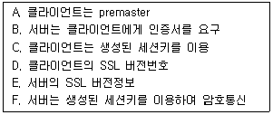
- A, B, C, D, E, F
- D. E, A, B, C, F
- D, E, B, C, A, F
- D, B, C, A, F, E
(정답률: 37%)
56. 무선플랫폼에서 보안 기술을 제공하기 위해 제시된 기술 중에서 WAP 기반 클라이언트/서버 간의 인증을 제공하며 적합한 인증서를 발급, 운영 관리하는 등 무선망에서의 공개키 기반구조를 의미하는 것은?
- PKI
- VPN
- WPKI
- SSL
(정답률: 63%)
57. 프락시 서버는 HTTP 헤더에 나타나는 값에 따라 분류가 가능하다. 다음은 어느 분류에 대한 설명인가?
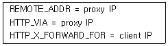
- Transparent Proxy
- Distortion Proxy
- Server Proxy
- Client Proxy
(정답률: 28%)
58. 다음 중에서 ebXML(Electronic business Extensible Markup Language)의 구성요소가 아닌 것은?
- CC(Core Component)
- RR(Registry and Repository)
- BP(Business Process)
- BP(Business Partners)
(정답률: 42%)
59. 다음 중에서 EAM(Extranet Access Management : 통합 인증 및 접근 제어 관리 기술)에 관한 설명으로 옳지 않은 것은?
- 인증
- 권한 관리
- ERP(Enterprise Resource Planning)의 또 다른 명칭이다.
- 3A
(정답률: 63%)
60. 다음은 웹 서비스에 대한 SQL Injection 공격에 대한 내용이다. 아래 내용을 분석할 때 공격자가 알 수 있는 정보가 아닌 것은?
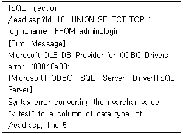
- 피해시스템은 MS SQL을 데이터베이스로 사용하고 있다.
- admin_login에 k_test라는 계정이 있는 것을 알 수 있다.
- read.asp의 id 파라미터에 SQL Injection 취약점이 존재한다.
- admin_login 테이블의 login_name 컬럼의 data type은 nvarchar 타입이다.
(정답률: 25%)
4과목: 정보 보안 일반
61. 다음은 보안을 통해 제공되는 서비스들을 설명하고 있다. 다음 중 옳지 않은 것은?
- Capability List는 객체와 권한 연결 리스트 형태로 관리한다.
- Access Control List는 주체와 객체의 형태를 행렬형태로 구성하고 권한을 부여하여 관리한다.
- 주체와 객체를 1:N으로 매핑하여 관리의 편의성을 높이는 방법이 RBAC이다.
- 접근제어는 프로토콜 데이터 부분의 접근제어이다.
(정답률: 32%)
62. 메시지에 대한 불법적인 공격자의 위협에는 수동적 공격과 능동적 공격이 있는데, 다음 중에서 옳게 짝지어진 것은?
- 수동적 공격 - 피싱
- 수동적 공격 – 세션 하이재킹
- 능동적 공격 - 메시지 변조
- 능동적 공격 - 스니핑
(정답률: 36%)
63. 다음 중에서 블록 알고리즘 종류와 특징을 옳게 설명한 것은?
- IDEA는 유럽에서 1990년 개발되었으며 PGP를 채택하고 8라운드의 알고리즘이다.
- AES 는 미국 연방표준 알고리즘으로 DES를 대신할 64비트 암호 알고리즘이다.
- SEED는 128비트 암호 알고리즘으로 NIST에서 개발한 대칭키 암호 알고리즘 표준이다.
- DES의 취약점을 보완하기 위하여 1997년 3-DES가 개발되었고 이것은 AES를 대신할 기술이다.
(정답률: 22%)
64. 일반적인 범용 브라우저들(internet explorer, chrome, firefox 그리고 safari)를 이용한 전형적인 전자상거래에서 복합적인 문제로 현재 사용되지 않는 기법은?
- HTML
- Script Language
- SSL
- 동적 세션 키 생성
(정답률: 38%)
65. 커버로스(Kerberos) 인증에 대한 설명으로 옳지 않은 것은?
- 커버로스 인증은 MIT에서 개발한 중앙 집중적 인증 시스템이다.
- 커버로스 인증은 티켓 서버와 인증서버가 존재하고 티켓을 발급받아 이증시스템으로 인증한다.
- 커버로스는 대칭키 기반 인증시스템을 사용한다.
- 커버로스의 인증과정 중에서, 인증 서버는 사용자의 비대칭키로 메시지를 암호화해서 전송한다.
(정답률: 50%)
66. 다음은 무엇에 대한 설명인가?
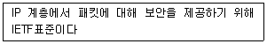
- SSL
- SET
- IPSec
- S-HTTP
(정답률: 81%)
67. 다음 중 TLS의 보안 서비스에 해당되지 않는 것은?
- SSL을 대신하기 위한 차세대 안정 통신 규약이다.
- 암호화에는 3개의 다른 데이터 암호화 표준(DES)키를 사용한 3DES 기술을 지원한다.
- 관용키 기반 암호화시스템이다.
- 네트워크나 순차 패킷교환, 애플토크(Appletalk)등의 통신망 통신 규약에도 대응된다.
(정답률: 39%)
68. 행동학적 특성을 이용한 바이오 인식 기술의 종류에 해당되지 않는 것은?
- 음성
- 얼굴인식
- 키보드 입력
- 지문
(정답률: 25%)
69. 다음 중에서 사용자 인증 기술에서 바이오인식 기술 요구사항이 아닌 것은?
- 보편성
- 유일성
- 불변성
- 주관성
(정답률: 53%)
70. RFID 태그와 판독기 사이에 사전에 약속된 형태의 무의미한 전자 신호를 지속적으로 발생시켜 불법적인 판독기가 태그와 통신하지 못하도록 함으로써 RFID 태그의 프라이버시를 보호하는 기법은?
- Faraday Cage
- Active Jamming
- Kill Tag
- Blocker Tag
(정답률: 40%)
71. Lamport의 일회용 패스워드의 안정성은 무엇에 근거하는가?
- 공개키 암호화
- 키 분배
- 해쉬 함수의 일방향성
- 대칭키 암호화
(정답률: 54%)
72. 다음 중에서 디바이스 인증 기술의 장점이 아닌 것은?(오류 신고가 접수된 문제입니다. 반드시 정답과 해설을 확인하시기 바랍니다.)
- 보안성
- 경제성
- 상호 연동성
- 책임 추적성
(정답률: 13%)
73. 다음에서 설명하는 키 교환 알고리즘은 무엇인가?
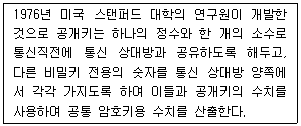
- Diffie-Hellman
- DES
- AES
- SEED
(정답률: 83%)
74. 다음은 Diffie-Hellman 키(Key) 사전 분배 방법이다. 옳게 나열한 것은?
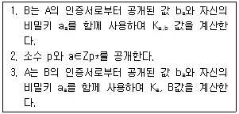
- 1-2-3
- 3-1-2
- 1-3-2
- 2-1-3
(정답률: 52%)
75. 전자상거래의 요구사항과 해결 방법을 옳게 연결한 것은?
- 인증 – 사용자 데이터를 암호화
- 식별 – 패스워드로 사용자를 확인
- 재사용 – 거래된 서명 재사용 가능
- 거래 당사자의 거래행위 부인 - 전자서명 및 공인인증제도 활용
(정답률: 40%)
76. 다음 중에서 전자 서명의 조건이 아닌 것은?
- 서명자 이외의 타인이 서명을 위조하기 어려워야 함
- 서명한 문서의 내용은 변경 불가능
- 허가받은 자만 검증 가능
- 다른 전자문서의 서명으로 재사용 불가능
(정답률: 52%)
77. 정보를 암호화하여 상대편에게 전송하면 부당한 사용자로부터 도청을 막을 수는 있다. 하지만, 그 전송 데이터의 위조나 변조 그리고 부인 등을 막을 수는 없다. 이러한 문제점들을 방지하고자 사용하는 기술은?
- 전자서명
- OCSP
- 암호화
- Kerberos 인증
(정답률: 50%)
78. 다음 중 공개키 기반 구조(PKI)에서 최상위 인증기관 (CA)를 무엇이라 하는가?
- RA
- PMI
- Root CA
- OCSP
(정답률: 62%)
79. 다음 기법 중 E-Mail 메시지 인증에 대한 설명으로 가장 옳은 것은?(오류 신고가 접수된 문제입니다. 반드시 정답과 해설을 확인하시기 바랍니다.)
- 수신자의 공개키를 이용하여 메시지에 서명하고, 수신자의 공개키를 이용하여 메시지를 암호화 한다.
- 송신자의 개인키를 이용하여 메시지에 서명하고, 수신자의 공개키를 이용하여 메시지를 암호화 한다.
- 수신자의 개인키를 이용하여 메시지에 서명하고, 송신자의 공개키를 이용하여 메시지를 암호화 한다.
- 송신자의 개인키를 이용하여 메시지에 서명하고, 송신자의 공개키를 이용하여 메시지를 암호화 한다.
(정답률: 20%)
80. LFSR에 대한 설명으로 옳지 않은 것은?
- 유한상태기계로 달성할 수 있는 최대주기수열을 얻을 수 있다.
- 선형복잡도를 수학적으로 나타내면 최소다항식의 차수를 의미한다.
- LFSR의 길이가 크면 쉽게 해독될 수 있다.
- LSFR의 길이 중 최소의 길이를 선형복잡도라고 한다.
(정답률: 60%)
5과목: 정보보안 관리 및 법규
81. 다음 중 정성적 위험분석 방법으로 짝지어진 것을 선택하시오?
- NPV, 파레토 차트
- 비용가치 분석, 델파이
- 델파이, 순위결정법
- 비용가치 분석, 순위결정법
(정답률: 44%)
82. 개인정보를 취급할 때에는 개인정보의 분실, 도난, 누출, 변조 또는 훼손을 방지하기 위해서 기술적, 관리적 보호조치를 취해야 하는 사항이 아닌 것은 무엇인가?
- 정보의 주체가 언제든지 쉽게 확인할 수 있는 조치
- 개인정보처리에 대한 감독
- 업무범위를 초과하여 개인정보를 이용하면 안 됨
- 개인정보 동의를 안전하게 받을 수 있는 보호조치
(정답률: 22%)
83. 다음은 침해사고 대응절차에 대한 설명이다. 침해사고 대응 1단계부터 6단계까지 순서를 올바르게 한 것은 무엇인가?
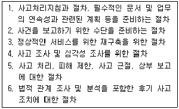
- 1-2-3-4-5-6
- 3-4-5-6-2-1
- 1-2-3-5-6-4
- 1-2-4-5-3-6
(정답률: 52%)
84. 다음 중 전자서명법에 의해서 공인인증서가 폐지되어야 하는 사유가 아닌 것은 무엇인가?
- 가입자 또는 대리인이 공인인증서 폐지를 신청한 경우
- 가입자가 부정한 방법으로 공인인증서를 발급받은 사실을 인지한 경우
- 공인인증서의 인증기간이 경과한 경우
- 가입자의 사망, 실종 선고 또는 해산 사실을 인지한 경우
(정답률: 44%)
85. 다음 같은 개인정보보호에 대한 시책 마련은 어느 법률에서 규정하고 있는가?
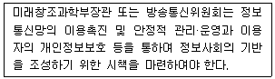
- 개인정보보호법
- 전자서명법
- 정보통신망 이용촉진 및 정보보호 등에 관한 법률
- 정보통신기반 보호법
(정답률: 65%)
86. 전자서명법에서 전자서명에 대한 설명이다. 올바르지 않은 것은 무엇인가?
- 누구든지 타인의 명의로 공인인증서를 발급받거나 발급받을 수 있도록 하여서는 아니 된다.
- 누구든지 공인인증서가 아닌 인증서 등을 공인인증서로 혼돈하게 하거나 혼동할 우려가 있는 유사한 표시를 사용하거나 허위로 공인인증서의 사용을 표시하여서는 아니 된다.
- 누구든지 공인인증서를 이용범위 또는 용도에서 벗어나 부정하게 사용하여서는 아니 된다,
- 법원이 허락하는 경우 타인의 명의로 공인인증서를 발급받을 수 있다.
(정답률: 50%)
87. 다음은 정보보호 관리측면에서 무엇에 대한 정의인가?
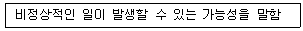
- 자산
- 취약점
- 위험
- 손실
(정답률: 56%)
88. 정보보호의 예방대책을 관리적 예방대책과 기술적 예방대책으로 나누어질 때, 관리적 예방대책에 속하는 것은 무엇인가?
- 방화벽에 패킷 필터링 기능 활성화
- 전송되는 메시지에 대한 암호화
- 복구를 위한 백업 실행
- 문서처리 순서 표준화
(정답률: 54%)
89. 다음 정보보호 교육에 대한 설명으로 옳지 않은 것은 무엇인가?
- 정보보호 교육은 정기적으로 실시하며 교육은 온라인과 오프라인으로 진행할 수 있다.
- 정보보호 교육 담당자는 교육과정 개발, 교육 실시를 주관하며 교육완료 후 교육효과에 대한 내용을 관리해야 한다.
- 훈련 받는 대상자는 정보보호에 관련된 업무를 수행하는 직원만 교육을 평가하여 다음 교육에 반영할 수 있도록 노력해야 한다.
- 교육은 수시교육, 정기교육, 정보공유 형태로 1년 2회 이상 실시한다.
(정답률: 45%)
90. 다음 중 정보시스템 관리 책임자의 주요 임무가 아닌 것은 무엇인가?
- 정보기술 표준 지침 실행여부 확인
- 정보시스템에 대한 주기적인 백업과 복구
- 정보시스템 운영 매뉴얼 변경관리 및 현행화
- 조직의 전반적인 보안인식 프로그램 관리
(정답률: 25%)
91. 다음 중 전자서명법에서 정의한 용어가 아닌 것은 무엇인가?
- 전자서명생성정보는 전자서명을 생성하기 위하여 이용하는 전자적 정보를 말한다.
- 공인인증서는 제 15조 규정에 따라 공인인증기관이 발급하는 인증서를 말한다.
- 전자서명검증정보는 전자서명을 검증하기 위하여 이용하는 전자적 정보를 말한다.
- 인증기관정보는 인증서 발급에 대한 정보이다.
(정답률: 49%)
92. 다음 중 정보통신서비스 제공자 등이 전보 또는 퇴직 등 인사이동이 발생하여 개인정보취급자가 변경되었을 경우 지체 없이 개인정보처리 시스템의 접근권한을 변경 또는 말소하기 위한 방법 중 가장 적합한 것은 무엇인가?
- 개인정보처리시스템의 접근권한은 변경일자를 정해서 해당일자에만 변경처리를 한다.
- 인사 DB와 개인정보처리시스템을 실시간 연동시켜 개인정보취급자가 자동적으로 전보 또는 퇴직 시스템의 계정도 동시 삭제한다.
- 개인정보처리시스템에서 권한관리는 담당자를 지정해서 담당자에 의해서만 관리하고 담당자는 보안상 반드시 1인으로 한다.
- 접근권한에 대한 말소는 개인정보취급자가 퇴사 이후에도 업무인수인계 측면에서 일정한 기간 동안 권한을 유지해야 한다.
(정답률: 55%)
93. 다음 중 용어에 대한 설명으로 옳지 않은 것은 무엇인가?
- 정성적 기준 : 자산 도입비용, 자산복구비용, 자산복구비용의 기준이 됨
- 정성적 기준 : 정보자산의 우선순위 식별
- 정량적 기준 : 정보자산의 취약점에 대한 피해를 산정
- 정량적 기준 : 영향도 분석 결과를 수치화하여 산정
(정답률: 47%)
94. 다음은 정보통신서비스 제공자가 정보통신망 법의 규정을 위하여 부담하게 되는 손해배상액에 관한 규정이다. ( )에 적합한 것을 선택하시오.
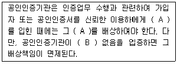
- 피해, 책임
- 피해, 과실
- 손해, 책임
- 손해, 과실
(정답률: 34%)
95. 다음 중 위험관리계획의 과정에 대한 설명으로 옳지 않은 것은 무엇인가?
- 일반적으로 효과적인 보안에는 자산에 대한 보안계층이 단일화 되어 있는 하나의 단일화된 대책의 조합이 요구된다.
- 위험관리 시에 가장 먼저 수행하는 것이 위험관리계획이다.
- 위험관리계획은 위험관리 범위와 조직, 책임과 역할 등이 나와 있다.
- 위험관리계획은 최초작성 이후에 변경될 수 있다.
(정답률: 30%)
96. 다음 중 위험분석 시 정량적 분석의 단점으로 올바른 것은 무엇인가?
- 계산이 단순하고 정량적으로 측정할 수 있다.
- 민간도 분석과 같은 독립변수와 종속변수 간의 관계를 수치화시켜서 정성적으로 분석을 수행한다.
- 정성적 분석은 시나리오 법 등을 사용하고 정량적 분석은 델파이법을 사용한다.
- 계산이 복잡하여 분석하는데 시간, 노력, 비용이 많이 든다.
(정답률: 44%)
97. 암호 알고리즘에 대한 안전성 평가에 대한 설명으로 옳지 않은 것은 무엇인가?
- 암호화 알고리즘은 128Bit 이상의 키를 사용하여 안정성을 확보한다.
- 암호화를 통한 충돌, 복잡도 등에 대한 안전성 확보가 필요하다.
- 국가사이버안전센터 및 한국인터넷진흥원에서 권고하는 암호기법을 사용하는 것이 안전하다.
- 암호모듈 안정성 평가는 CC(Common Criteria)에 평가기준 및 방법이 정의되어 있다.
(정답률: 27%)
98. 다음 중 정보통신망법에 의하여 개인정보를 제 3자에게 제공하기 위하여 동의를 받을 경우에 제 3자에게 알려야 하는 사항이 아닌 것은 무엇인가?
- 개인정보 제공계약의 내용
- 개인정보에 대한 수탁자의 이용목적
- 개인정보에 대한 제 3자 제공여부
- 개인정보 취급을 위탁하는 업무
(정답률: 31%)
99. 다음 중 정보보호의 주요 목적이 아닌 것은 무엇인가?
- 기밀성
- 무결성
- 정합성
- 가용성
(정답률: 59%)
100. 전자서명법 제15조(인증서 발급 등) 2항에서 정한 공인인증기관이 발급하는 인증서에 포함되어야 하는 것이 아닌 것은 무엇인가?
- 가입자의 이름
- 가입자의 전자서명검증정보
- 공인인증서 일련번호
- 인증서 취소목록 및 가입자의 전자서명생성
(정답률: 54%)
- ㉠ 하드웨어 계층: 컴퓨터 시스템의 물리적인 부분을 담당한다.
- ㉢ 인터럽트 계층: 하드웨어에서 발생하는 이벤트를 처리하고 운영체제에 알린다.
- ㉡ 커널 계층: 운영체제의 핵심 기능을 담당한다.
- ㉣ 사용자 계층: 응용 프로그램과 사용자 인터페이스를 담당한다.
- ㉤ 응용 프로그램 계층: 사용자가 직접 사용하는 프로그램을 담당한다.
따라서, 하위계층에서 상위계층으로 바르게 나열된 것은 "㉠-㉢-㉡-㉣-㉤" 이다.